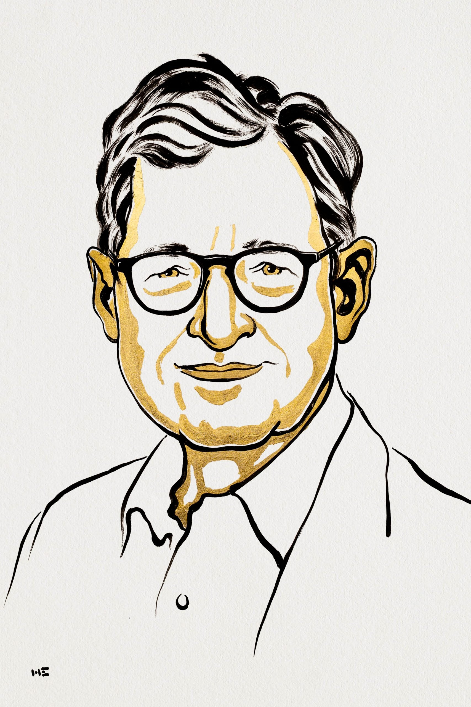

INPUT
Shocks, expectations and policy signals
Households and firms form views about future demand, inflation, and interest rates.
MONETARY POLICY · EXPECTATIONS · NEW KEYNESIAN MODEL
An American economist who developed a coherent framework linking private expectations, sticky prices, interest-rate decisions, inflation, and the output gap.

WHY HE MATTERS
Woodford assembled household demand, firm pricing, and monetary-policy behaviour into a rigorous New Keynesian system. The framework lets economists trace how current and expected policy affect output and inflation—and compare stabilisation strategies.
Households and firms form views about future demand, inflation, and interest rates.
An output-gap relation and price-setting equation interact with a policy rule.
Modelled trajectories reveal trade-offs between inflation stability and real activity.
THREE-PASS REVIEW
Demand links the output gap to real interest rates, price setting links inflation to economic slack, and a policy rule links the central bank’s instrument to stabilisation goals.
VERIFIED READING